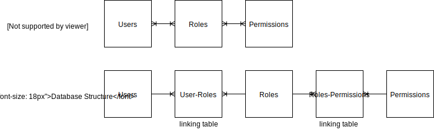

Application Security and Hardening
Geekwise Academy
Week 7 - Refresh Tokens, Roles, and Session Hijacking
Instructors:
Corey Shuman
Slack Channel:
Github Repo:
https://github.com/coreyshuman/GeekwiseApplicationSecurity
Lecture Notes:
http://coreyshuman.github.io/GeekwiseApplicationSecurity/LectureNotes
Table of Contents:
[Article Link](https://dev.to/robdwaller/four-security-principles-that-software-developers-should-follow-24gi)
[Article Link](https://dev.to/rdegges/please-stop-using-local-storage-1i04)
While this article goes against item 1 from our previous article (and was specifically called out for it), it is a thought-provoking read. Now I certainly don't agree with the absolutist idea to abolish using Local Storage. Angular recommends Local Storage as a potential place to [store tokens](https://blog.angular-university.io/angular-jwt-authentication/), for example. But after reading this article, I decided we could better with our secure application.
Let's look at why Local Storage could be a bad place for an access token. [Session Hijacking](https://www.owasp.org/index.php/Session_hijacking_attack) is a type of attack where a malicious attacker is able steal or predict the session token to gain unauthorized access to a Web Server. Common ways in which a session token could be compromised include:
For example, an external resource (such as jQuery from a CDN) could be hijacked and turned malicious, sending all Local Storage variables to an attacker.
[Auth0: Refresh Tokens](https://auth0.com/learn/refresh-tokens/)
A Refresh Token is a special kind of token that can be used to obtain a renewed access token —that allows accessing a protected resource— at any time. You can request new access tokens until the refresh token is blacklisted. Refresh tokens must be stored securely by an application because they essentially allow a user to remain authenticated forever.
Here is the document I used to help me implement Refresh Tokens in our application: [Medium: Using Refresh Tokens](https://medium.com/hyphe/using-refresh-tokens-in-node-to-stay-authenticated-ad0c9d2b444f)
A security stamp is a piece of data used to verify and invalidate access tokens. It in used in the ASP.NET Identity library. While I haven't seen it used by anyone else in NodeJS projects, I've started including it in my JWT projects as a mechanism to invalidate old tokens. Similar to ASP.NET, I like to use a snapshot of the user's credentials as the payload of this data. As a result, any time the user's credentials or access level changes, the current tokens are invalidated.
Security stamps also give you the ability to "log out everywhere" in your application.
[OWASP: Testing CORS](https://www.owasp.org/index.php/Test_Cross_Origin_Resource_Sharing_(OTG-CLIENT-007))
[OWASP CORS Security Cheat Sheet](https://www.owasp.org/index.php/HTML5_Security_Cheat_Sheet#Cross_Origin_Resource_Sharing):
Cross Origin Resource Sharing (CORS) is a mechanism that allows browsers to support "cross-domain" requests in a controlled, more secure manner. Starting with the XMLHttpRequest L2 API, browsers have gained the ability to send requests to cross origins. CORS defines the protocol used between a web browser and a server to determine whether a cross-orign request is allowed. It is important to note that CORS only affects how the browser behaves. It does not have any effect on what or who the server will respond or send data to.
The CORS specification mandates that for non simple requests, such as requests other than GET or POST or requests that uses credentials, a pre-flight OPTIONS request must be sent in advance to check if the type of request will have a bad impact on the data. The pre-flight request checks the methods, headers allowed by the server, and if credentials are permitted, based on the result of the OPTIONS request, the browser decides whether the request is allowed or not.
CORS is defined using a series of headers sent in both the request and the response:
The `Origin` header is always sent by the browser in a CORS request and indicates the origin of the request. The `Origin` header can not be changed from JavaScript however relying on this header for Access Control checks is not a good idea as it may be spoofed outside the browser, so you still need to check that application-level protocols are used to protect sensitive data.
`Access-Control-Allow-Origin` is a response header used by a server to indicate which domains are allowed to read the response. Based on the CORS W3 Specification it is up to the client to determine and enforce the restriction of whether the client has access to the response data based on this header.
From a penetration testing perspective you should look for insecure configurations as for example using a `*` wildcard as value of the `Access-Control-Allow-Origin` header that means all domains are allowed. Other insecure example is when the server returns back the Origin header without any additional checks, what can lead to access of sensitive data. Note that this configuration is very insecure, and is not acceptable in general terms, except in the case of a public API that is intended to be accessible by everyone.
The `Access-Control-Request-Method` header is used when a browser performs a preflight `OPTIONS` request and let the client indicate the request method of the final request. On the other hand, the `Access-Control-Allow-Method` is a response header used by the server to describe the methods the clients are allowed to use.
These two headers are used between the browser and the server to determine which headers can be used to perform a cross-origin request.
This header as part of a preflight request indicates that the final request can include user credentials.
View the OWASP link at the beginning of this section for examples of insecure/ vulnerable JavaScript code.
In this class we will look at an approach to restricting system access called role-based access control (RBAC). An RBAC system is built around relationships between users, roles, and permissions. A user can have one or more roles, and a role can allow one or more permissions. This system allows for simple user assignment, while being flexible enough to support thousands of users and permissions.
In the table below, we see the simplified and actual structure of our roles system in the database. Each user can have multiple roles, while each role belongs to multiple users. We call this a [many-to-many relationship](https://en.wikipedia.org/wiki/Many-to-many_(data_model)). The roles and permission share a similar structure.
To create this type of structure in our database, we need a way to associate our many users to many roles, and many roles to many permissions. To do this, we use [associative tables](https://en.wikipedia.org/wiki/Associative_entity) or *linking tables*.
For an example, a user could have the roles `subscriber` and `publisher`. The `subscriber` role could give them access to the `view` method, while the `publisher` role could give them access to the `create`, `edit`, and `delete` methods.
[Angular University: Angular JWT Authentication](https://blog.angular-university.io/angular-jwt-authentication/)